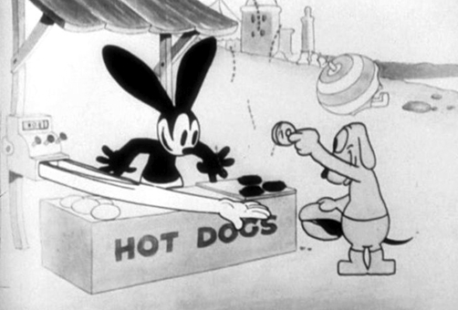
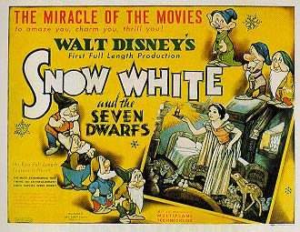
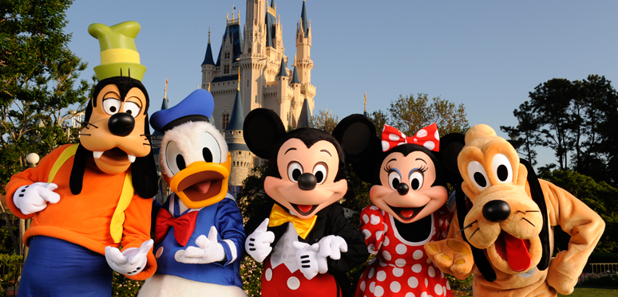

The Walt Disney Company, commonly known as Disney, is an American diversified multinational mass media corporation headquartered in Walt Disney Studios, Burbank, California. It is the largest media conglomerate in the world in terms of revenue.[3] Disney was founded on October 16, 1923, by Walt and Roy Disney as the Disney Brothers Cartoon Studio, and established itself as a leader in the American animation industry before diversifying into live-action film production, television, and travel. Taking on its current name in 1986, it expanded its existing operations and also started divisions focused upon theater, radio, music, publishing, and online media. In addition, Disney has created new divisions of the company in order to market more mature content than it typically associates with its flagship family-oriented brands.
The company is best known for the products of its film studio, the Walt Disney Studios, and today one of the largest and best-known studios in Hollywood. Disney also owns and operates the ABC broadcast television network; cable television networks such as Disney Channel, ESPN, A+E Networks, and ABC Family; publishing, merchandising, and theatre divisions; and owns and licenses 14 theme parks around the world. It also has a successful music division. The company has been a component of the Dow Jones Industrial Average since May 6, 1991. An early and well-known cartoon creation of the company, Mickey Mouse, is a primary symbol of The Walt Disney Company.
1923–1928: The silent era
In early 1923, Kansas City, Missouri animator Walt Disney created a short film entitled Alice's Wonderland, which featured child actress Virginia Davis interacting with animated characters. After the bankruptcy in 1923 of his previous firm, Laugh-O-Gram Films,[ChWDC 1] Disney moved to Hollywood to join his brother Roy O. Disney. Film distributor Margaret J. Winkler of M.J. Winkler Productions contacted Disney with plans to distribute a whole series of Alice Comedies purchased for $1,500 per reel with Disney as a production partner. Walt and his brother Roy Disney formed Disney Brothers Cartoon Studio that same year. More animated films followed after Alice.[4] In January 1926 with the completion of the Disney studio on Hyperion Street, the Disney Brothers Studio's name is changed to the Walt Disney Studio.[ChWDC 2] After the demise of the Alice comedies, Disney developed an all-cartoon series starring his first original character, Oswald the Lucky Rabbit,[4] which was distributed by Winkler Pictures through Universal Pictures.[ChWDC 2] The distributor owned Oswald, so Disney only made a few hundred dollars.[4] Disney only completed 26 Oswald shorts before losing the contract in February 1928, when Winkler's husband Charles Mintz took over their distribution company. After failing to take over the Disney Studio, Mintz hired away four of Disney's primary animators except Ub Iwerks to start his own animation studio, Snappy Comedies.
1934–1945: Snow White and the Seven Dwarfs and World War II
Deciding to push the boundaries of animation even further, Disney began production of his first feature-length animated film in 1934. Taking three years to complete, Snow White and the Seven Dwarfs, premiered in December 1937 and became highest-grossing film of that time by 1939.[7] Snow White was released through RKO Radio Pictures, which had assumed distribution of Disney's product in July 1937,[ChWDC 5] after United Artists attempted to attain future television rights to the Disney shorts.[8] Using the profits from Snow White, Disney financed the construction of a new 51-acre (210,000 m2) studio complex in Burbank, California. The new Walt Disney Studios, in which the company is headquartered to this day, was completed and open for business by the end of 1939.[ChWDC 6] The following year on April 2, Walt Disney Productions had its initial public offering.[ChWDC 7] The studio continued releasing animated shorts and features, such as Pinocchio (1940), Fantasia (1940), Dumbo (1941), and Bambi (1942).[4] After World War II began, box-office profits declined. When the United States entered the war after the attack on Pearl Harbor, many of Disney's animators were drafted into the armed forces. The U.S. and Canadian governments commissioned the studio to produce training and propaganda films. By 1942 90% of its 550 employees were working on war-related films.[9] Films such as the feature Victory Through Air Power and the short Education for Death (both 1943) were meant to increase public support for the war effort. Even the studio's characters joined the effort, as Donald Duck appeared in a number of comical propaganda shorts, including the Academy Award-winning Der Fuehrer's Face (1943)
1955–1965: Disneyland
In 1954, Walt Disney used his Disneyland series to unveil what would become Disneyland, an idea conceived out of a desire for a place where parents and children could both have fun at the same time. On July 18, 1955, Walt Disney opened Disneyland to the general public. On July 17, 1955, Disneyland was previewed with a live television broadcast hosted by Art Linkletter and Ronald Reagan. After a shaky start, Disneyland continued to grow and attract visitors from across the country and around the world. A major expansion in 1959 included the addition of America's first monorail system. For the 1964 New York World's Fair, Disney prepared four separate attractions for various sponsors, each of which would find its way to Disneyland in one form or another. During this time, Walt Disney was also secretly scouting out new sites for a second Disney theme park. In November 1965, "Disney World" was announced, with plans for theme parks, hotels, and even a model city on thousands of acres of land purchased outside of Orlando, Florida.
Disney continued to focus its talents on television throughout the 1950s. Its weekday afternoon children's television program The Mickey Mouse Club, featuring its roster of young "Mouseketeers", premiered in 1955 to great success, as did the Davy Crockett miniseries, starring Fess Parker and broadcast on the Disneyland anthology show.[4] Two years later, the Zorro series would prove just as popular, running for two seasons on ABC.[11] Despite such success, Walt Disney Productions invested little into television ventures in the 1960s[citation needed], with the exception of the long-running anthology series, later known as The Wonderful World of Disney.[4] Disney's film studios stayed busy as well, averaging five or six releases per year during this period. While the production of shorts slowed significantly during the 1950s and 1960s, the studio released a number of popular animated features, like Lady and the Tramp (1955), Sleeping Beauty (1959) and One Hundred and One Dalmatians (1961), which introduced a new xerography process to transfer the drawings to animation cels.[12] Disney's live-action releases were spread across a number of genres, including historical fiction (Johnny Tremain, 1957), adaptations of children's books (Pollyanna, 1960) and modern-day comedies (The Shaggy Dog, 1959). Disney's most successful film of the 1960s was a live action/animated musical adaptation of Mary Poppins, which was one of the all time highest grossing movies[4] and received five Academy Awards, including Best Actress Julie Andrews.[13]